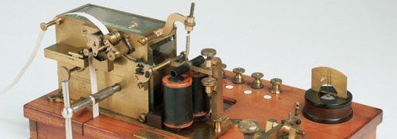
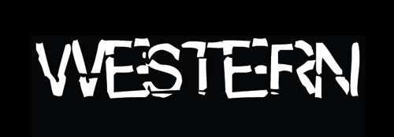

Zoek jouw verhaal op
Populairiteit
Alfabetisch
Datum
Meest gewaardeerd
Verras Mij
Hoeveel minuten wil je lezen?
5 min
10 min
15 min
20 min
Taalgebruik in het verhaal
12+
16+
18+
Geen
Welke genre vind je leuk?
Horror
Humor
Mysterieus
Romantiek
Bekijk alle 99 verhalen
10 minuten
Verassing
5/5
10 minuten
Beroemd
5/5
10 minuten
Freudiaans
5/5
10 minuten
Steenkolen
5/5
10 minuten
Martin Bril
5/5
10 minuten
Het gebrek
5/5
10 minuten
Vergezocht
5/5
10 minuten
Droom
5/5
10 minuten
Verliefd
5/5

10 minuten
Telegrafisch
5/5
10 minuten
Gefrustreerd
5/5

10 minuten
Western
5/5